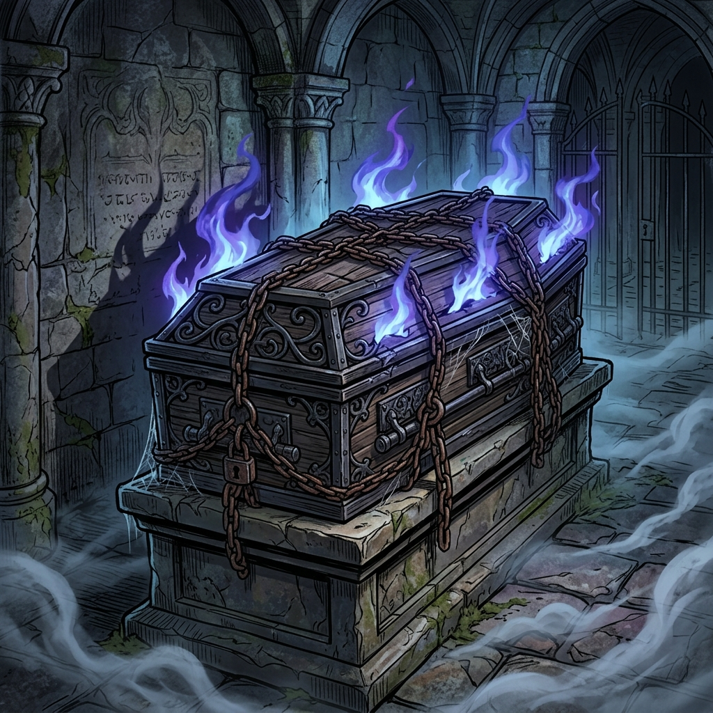

The Phantom Knights' Coffin
Normal Trap

[ Trap / Normal ]
(1) Banish 1 face-up "The Phantom Knights" or "Xyz Dragon" monster with a Level or Rank you control until the End Phase; Special Summon this card as a Normal Monster (Warrior/DARK/ATK 0/DEF 0) with a Level or Rank equal to that banished monster's. (This card is NOT treated as a Trap.)
(2) Except the turn this card was sent to the GY: You can banish this card from your GY; negate the effects of 1 face-up card your opponent controls until the end of this turn.
You can only use each effect of "The Phantom Knights' Coffin" once per turn.